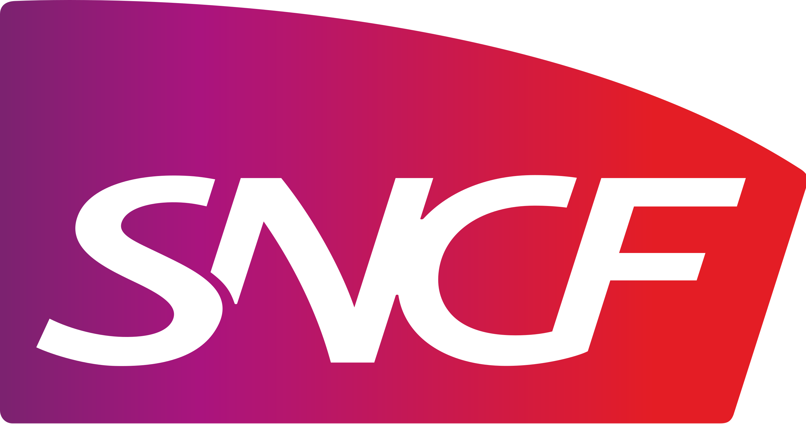

Comment capitaliser sur les outils,
méthodes et projets dans une équipe
réduite et volatile?
Corentin LEFFY
Développeur Android chez IT Link
Sommaire
- 1. L'entreprise
- 2. Le contexte
-
3. Vers une meilleure culture de la qualité
- 3.1. Transmettre
- 3.2. Maintenir
- 3.3. Agir
- 3.4. S'endetter
-
4. Vers un meilleur code
- 4.1. Écrire
- 4.2. Relire
- 4.3. Tester
- 4.4. Coder
1. L'entreprise
Fondée en 1986 par Robert Zribi
Fusionne avec IPSIS en 2017
+550 Linkers
3 pays
13 agences
8 pôles d'expertise
💸
44 M€ en 2017
43 M€ en 2018
25 M€ actuellement
🤝
2. Le contexte
Feature Squad de Spotify
Autonomie & Alignement
Livraisons pénibles et occasionelles
SCRUM
L’objectif principal est de réaliser des livraisons en respectant les critères Qualité / Coût / Délai
Le guide des bonnes pratiques des Linkers Teams
3. Vers une meilleure culture de la qualité
3.1. Transmettre
Raising the bar
⚠️
Qualité logicielle ≡ Logiciel bien conçu, apportant de la valeur et dont le code est de qualité
Les méthodes agiles permettent de...
Construire le bon produit
Construire le produit correctement
Efficience de la construction
Pourtant...
Trop de bugs 🐛
Utilisateurs et clients insatisfaits 😠
Coûts de développement qui explosent 💸💸💸
🤯
Pourquoi les promesses des méthodes agiles ne sont-elles pas tenues ?
Sandro MANCUSO
The Software Craftsman : Professionalism, Pragmatism, Pride
La non-qualité a un coût qui se paie à trois différents niveaux :
Stratégique
Financier
Humain
Le mouvement Software Craftsmanship prône...
L'excellence technique
Le professionnalisme des développeurs
La responsabilité de l'équipe
Mais comment accéder à l'excellence technique ?
Pratiques (TDD, BDD...)
Standards de code
Lire des livres ou des blogs
Rencontres à des conférences / meetups
Mentors
Comment partager ces valeurs et ces pratiques au sein de l’équipe ?
Binômage
Coding dojos
Revues de code
Intégrations continues
Et à l'échelle de l'entreprise ?
Soutenir les démarches d'amélioration continue
Créer des moments de rencontres
Allouer un budget à l'apprentissage / projet
Favoriser le travail collectif avec l’organisation des bureaux
Soutenir les leaders d'influence
3.2. Maintenir
Code source ≡ Actif ≡ 💰
Comment calculer la valeur du code d'une application ?
Coûts de développement, de maintenance, de dépannage, de déploiement
Qualités externes (Performance, robustesse, ergonomie, fiabilité...)
Qualités internes (Évolutivé, modularité, lisibilité...)
⚠️
Code ≡ Espace de travail de l'équipe ≡ Reflète la culture de l'entreprise
Écrire du code de très bonne qualité prend du temps
Caper JONES
The most effective way of improving software productivity and shortening project schedules is to reduce defect levels
Comment peut-on qualifier un code de non-maintenable ?
Modification = Nouvelles erreurs
Le temps pour comprendre
Refonte totale de l’application
Les verrues
Changement de projet, voir même d’entreprise
Coût des évolutions
Quelles sont les mesures pour se prémunir des crises d'anomalies ?
Tester unitairement
Faire des revues de code
Diffuser les informations et décisions
Compléter chaque correction par une action
Surveiller 3 métriques (débit de fonctionnalités, anomalies, niveau de dette technique)
3.3. Agir
Quelles sont les contre-mesures lors d'une crise ?
Augmenter la capacité de l’équipe
Corriger les symptômes des anomalies
Recruter de meilleurs développeurs
Faire pression
👎
| Fonctionnalités | Bugs | Dettes | Situation |
|---|---|---|---|
| +++ | -- | -- | 😍 |
| +++ | - | - | 😄 |
| = | + | + | 🙂 |
| - | + | = | 😐 |
| - | +++ | +++ | 😟 |
| - | - | - | 🥵 |
Et est-ce qu'il y a d'autres symptômes ?
Développeurs débordés
Horaires de travail hors normes
Discussions tendues sur les mesures à prendre
Ambiance de travail maussade
« Sauveurs » VS « Boucs émissaires »
Postures de blâme, défensive ou de sacrifice
3.4. S'endetter
La dette technique
Une solution temporaire, un écart ponctuel aux pratiques de l’équipe...
... une solution de recouvrement est identifiée et planifiée
Moyen de qualifier le code, de parler de sa qualité globale préoccupante, et qu’aucune solution ne soit identifiée
« Tactique » VS « Endémique »
Endémique ≡ Problème
Tactique ≡ Solution
4. Vers un meilleur code
4.1. Écrire
10 fois plus de temps à lire qu'à écrire
Lire du code ≡ Lire un journal
Découper, séparer et bien nommer
🤔
Les variables, méthodes, classes sont-elles nommées correctement ?
Cette méthode, classe fait-elle trop de choses ?
Utilise-t-on le bon patron de conception ou la bonne interface ?
Robert C. MARTIN
Clean Code
Comment savoir si le code a un problème ?
La longueur des méthodes (≃ 20 lignes), des classes (≃ 200 lignes)
Le niveau d’indentation (≤ 2)
Le nombre d’arguments d’une méthode (≤ 3)
La capacité de lecture en diagonale
Le nombre de dépendances par classe
La complexité des tests automatisés
Bien nommer grâce au vocabulaire métier
Utiliser les termes du métier dans le code...
Réduire les risques d’incompréhension
Réduire l'effort pour passer du métier au code
Behavior Driven Development (BDD)
Bien nommer grâce à l’usage de la langue
Code ≡ Anglais
Précise et technique
Utiliser la langue du métier
Franglais
Pour avoir un bon design...
Est-ce que les pratiques de développement de l'équipe permettent appréhender des problématiques complexes?
Est-ce que l’on parvient à produire un code clair et compréhensible pour tous ?
Design Simple de Kent Beck
- 1. Tous les tests passent (donc le code fonctionne)
- 2. L’intention est claire
- 3. Il n’y a pas de duplication
- 4. Le code est minimaliste grâce aux principes KISS & YAGNI
- Single Responsability : ne faire qu’une seule chose mais la faire bien
- Open/Closed : une classe doit être ouverte à l’extension mais fermée à la modification
- Liskov Substitution : toute implémentation d’une interface doit pouvoir se substituer à une autre
- Interface Segragation : une classe ne doit implémenter une interface que si elle a réellement besoin de remplir son contrat
- Dependency Inversion : le code ne doit pas interagir directement avec l’extérieur mais par des abstractions
4.2. Relire
Depuis 1976
Google, Microsoft, ...
Manque de temps, professionalisme, peur du contrôle...
- Détecter 50-65% des défauts
- Booster la qualité
- Renforcer la propriété collective
- Permettre l’apprentissage
- Améliorer les échanges
Quel format choisir ?
La revue collective
La revue par un pair
Le pair programming
| Collective | Par un pair | Pair programming | |
|---|---|---|---|
| Anomalies détectées | +++ | ++ | ++ |
| Propriété collective | +++ | ++ | +++ |
| Facilité | + | +++ | ++ |
| Feedback | + | ++ | +++ |
- Il y a un échange pendant la revue
- Les fautes sont corrigées par l’auteur
- Les standards sont partagés
- La revue ne blesse pas les développeurs
- La relecture est faite par l’ensemble de l’équipe
- La revue est soutenue par le management
4.3. Tester
Pour réduire le coût des défauts détectés et minimiser la perte de temps...
- Tester = Habitude
- Au plus tôt durant le développement
- Automatiser les tests importants & sensibles
Tests manuels
- Tests d’acceptation utilisateur
- Tests d’exploration
- Tests d’usabilité
Outils spécialisés
- Tests de sécurité
- Tests de charge
- Tests de robustesse
Tests manuels et automatisés
- Tests des nouvelles fonctionnalités
- Non régression fonctionnelle
- Automatiser les tests importants & sensibles
Tests automatisés
- Tests unitaires du code
- Tests d’intégration des composants
Quels tests faut-il mettre en place ?
Je n’ai pas besoin de tester car je suis développeur. Il y a une équipe de testeurs, ce n’est pas mon travail...
| Type | Granularité | Feedback | Implémentation |
|---|---|---|---|
| Unitaire | Très fine | Très rapide | Très simple |
| Intégration et fonctionnel | Partie de logiciel | Rapide | Simple |
| End to end / IHM | Logiciel entier | Lent | Complexe |
| Critique | Logiciel entier | Très lent | Très complexe |
La pyramide des tests
⚠️ L'anti-pattern
Manuels IHM & E2E Inté.4.4. Coder
TDD c'est quoi ?
Test Driven Development
2002 par Kent Beck dans Test-Driven Development : By Example
- 1. Écrire un test
- 2. Faire passer le test
- 3. Refactor le code
Les bénéfices du TDD
Impact positif sur la productivité
Si régressions détectées, alors corrigées pendant la phase de construction
Refactoring obligatoire = code plus lisible et plus propre
La spécification technique = le code plus facilement appréhendable